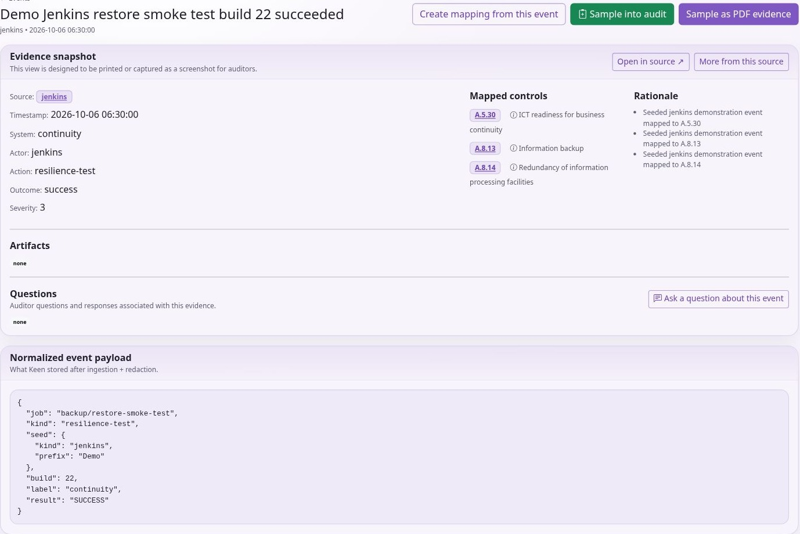

Using KEEN
Review evidence, questions and incidents
Chapter 6 of 15
Review events and their evidence
Collect and inspect evidence
Admins can run enabled adapters from Admin → Import & ingest. Read the output and check the resulting Events view. Scheduled ingestion uses backend jobs and source cursors to continue from previous runs. A source can be enabled but return no new events if its query, time window or upstream permissions yield no results.
Use Admin → Add Diary evidence for a manual record. Describe the event and its time, attach relevant files or permitted external links, and select applicable controls. A diary record can be sampled in an audit just like other evidence. Record enough context for another person to understand who did what and why.
The Events screen supports search and filtering. Open an event to inspect its timestamp, source, system, actor, action, outcome, severity, summary and available normalised payload. Review artefacts separately from the summary. An artefact is the stored supporting material; external links can change or require access to another system.
Redaction removes recognised secret-like values during ingestion. Optional masking can affect personal data in evidence or exports. Do not assume that all sensitive information is automatically detected. Review source content and the suitability of what you collect.
On an event, inspect mapped controls and mapping rationale. Where permitted, add or adjust manual mappings, start a question, create an incident or sample the event into an audit. Mapping something is an assertion of relevance: make the rationale clear enough for an auditor to challenge it.
Review events, questions and incidents
Search Events with an appropriate date range and source filters. Open an event and inspect timestamp, actor, system, action, outcome, severity, summary and available payload. Open artefacts separately: the summary may omit important details, and an external link may change or require another system’s credentials.

Where permitted, add manual control mappings with a clear rationale, start a question or sample the event into an audit. For a manual activity, an administrator can use Add Diary evidence with a meaningful date, description, supporting material and applicable controls. State who did what, why it mattered and which record proves it.
Use Questions to request missing context from the relevant record. Follow replies in the application; notification delivery depends on the installation. Declaring an incident from evidence requires a configured external incident webhook. Confirm delivery, check the receiving system and follow the organisation’s incident process.
The Sources view helps distinguish a quiet service from a broken collector. No events may mean no activity, a narrow query, a cursor already at the end, expired credentials or a disabled adapter. Redaction and optional masking are useful controls, but still review what is collected and exported.
Questions and incidents
Sources, questions and incidents
Sources groups evidence by origin. Use a source’s evidence links and visualisations to inspect activity over time and identify gaps. Sources can also be associated with effectiveness measures. Missing evidence may indicate a collection problem, a quiet system or an inappropriate query; investigate before drawing a control conclusion.
Questions provide a discussion attached to the relevant entity or event. State the issue, the information needed and its context. Follow replies in Questions or your account view. Notification delivery depends on the installation’s configuration, so the application record remains the place to confirm the discussion.
Declaring an incident from evidence requires a configured incident webhook. KEEN saves the declaration after the receiver returns a successful response. Continue investigation and resolution in your organisation’s incident workflow. See the practical handbook for the declaration steps and delivery-failure behaviour.
Ask and answer questions about evidence and risks
Questions are discussions attached to a specific evidence event, risk or PESTLE(E) item. They keep a reviewer’s uncertainty with the material being reviewed. Use this workflow on evidence events, risks and PESTLE(E) records to clarify their content.
- Open the evidence, risk or PESTLE(E) detail and its Questions area. Your account needs access to that record and permission to create questions.
- Write a specific question, such as “Which restore test does this result refer to, and where is its completion record?” Explain the missing context and submit it.
- For evidence questions, attach supporting files where useful. Attachments are supported for evidence-question posts; risk and PESTLE(E) questions are text-only.
- Use My Questions to follow questions you opened and unread administrator replies. Administrators use the Questions queue, which can show unanswered, reviewing, answered or all threads.
- Return to the linked record to read the discussion in context. Only administrators and the thread’s author can reply, subject to access checks.
A new thread starts Unanswered. An administrator can mark it Reviewing while investigating. An administrator’s reply sets it to Answered; a subsequent reply by its non-administrator author reopens it as Unanswered. Administrators can also set these statuses explicitly. An Answered status records the workflow state. Assess the evidence’s sufficiency using the reply and supporting material.
Unread indicators help authors find responses. Optional administrator-configured question webhooks can notify Slack, Teams, Google Chat or a generic destination. The discussion remains in KEEN; do not assume that replying in an external chat creates a KEEN answer. Deleting a thread requires the question-delete permission and removes discussion history, so use a reply or status change when you intend to preserve the review.
Declare an incident from evidence
Incident declaration lets you escalate an evidence event to a configured external incident workflow. The administrator must configure an incident webhook, and your account needs event access and incident.create permission. Without that integration, KEEN cannot complete a declaration.
- Open the event containing the concerning evidence. Check its timestamp, source, affected system and attached material.
- Choose the incident action, supply a concise title and describe the concern, impact and immediate context. The event link accompanies the declaration.
- Submit once and wait for the result. KEEN sends the declaration and event context to the configured webhook.
- On a successful 2xx response, KEEN saves the incident declaration against the event, including its creator and creation time. Review that record and continue the response in your organisation’s configured destination.
A delivery failure displays an error and leaves the declaration unsaved. If the receiver processed a request but its response was lost, check the destination before resubmitting to avoid duplicates. An HTTP success confirms delivery to the integration. Follow investigation and resolution in the receiving system.
Manage assignments, severity changes and resolution in your external incident system. Deleting the declaration in KEEN requires incident.delete permission and does not recall the outbound webhook or close an external ticket. Keep response actions, conclusions and any resulting risk treatment in the appropriate records.
Evidence retention and audit samples
The administrator can retain evidence by maximum age or by maximum event count, or leave automatic retention disabled. Events sampled into audits are protected. Removing a sample from an audit does not release its retention hold; the owning audit must be deleted. A maximum event count applies to unprotected events, so audit-protected evidence can make the total larger.
A purge removes eligible evidence and schedules storage cleanup. Object-lock or retention rules in the storage provider may delay physical deletion; administrators can inspect pending cleanup. Audit deletion releases that audit's holds. Evidence also protected by another audit remains protected.